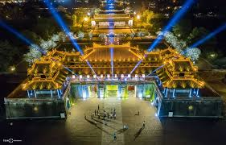
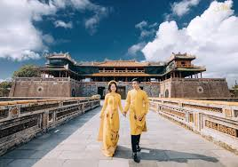
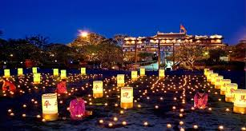

- 
- 
- 


ベトナムのフェについて
ベトナムのフェはベトナムの中部にあってハノイから飛行機で2時間ぐらいかかります。
昔のベトナムの首都です
フェーは王様に住んでいたところです、歴史３００年間ぐらいはベトナムの首都、いろいろな文化と料理今まで存在します。ロマンチックなフオンー川のほとりに位置するフエシタデルは、世界の文化的遺物として認識されている文化的遺物の複合体です。フエシタデルの複合施設には、インペリアルシタデルと紫禁城があり、シタデルエリアに囲まれています。
現在発展しました
フエ城塞の遺物、フエの観光名所の複合体を訪れると、グエン王朝の大胆な建築が施された壮大な宮殿、記念碑、寺院を鑑賞できます。歴史について学ぶ機会があるだけでなく、このユニークな建築空間で写真を撮ることにも甘んじています。
Thuan An beach
フエ市には古代の歴史的および文化的遺物があるだけでなく、多くの観光客を魅了する美しいビーチもあります。ランコビーチはベトナムで最も美しい景色のビーチで、フエのトップ観光地の1つである澄んだ青い海岸を囲む長い白い砂浜があります。海岸の周りには雄大な山の背景に雄大な緑の森があり、それは間違いなくあなたのフエ旅行体験をより完全にするでしょう。
Thuy Tien 湖
トゥイティエン湖は、緑の木々が立ち並ぶティエンアンの丘の上にあります。トゥイティエン湖が静かで詩的でロマンチックな美しさを持っている場合、ティエンアンヒルは緑の松の木で覆われているため、「ミニチュアダラット」のように見えます。すべてが融合し、ゆったりとした落ち着いた空間で、軽やかさとくつろぎを感じさせます。
Bach Ma
フエ市の中心部から離れたバッハマ山は、壮大な滝と多様な珍しい動植物が生息するバッハマ国立公園のトゥアティエンフエ州とダナン州の自然の境界です。バッハマ山を征服すると、トゥイヴァン山のパノラマビュー、ハイヴァン峠、そして目のようにフエ市の素晴らしい景色を眺めることができます。